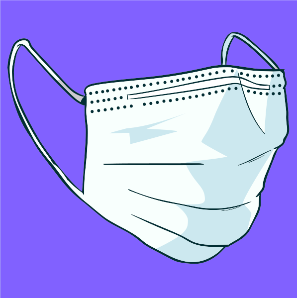
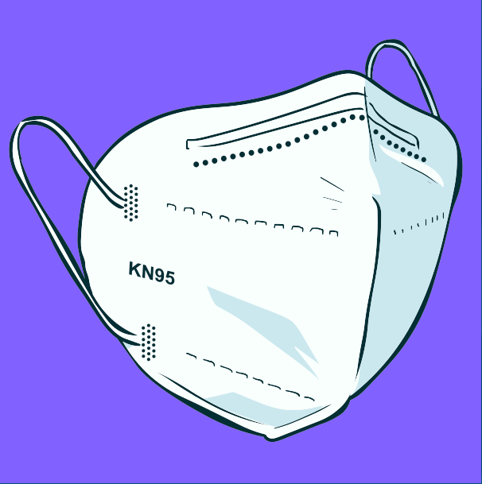
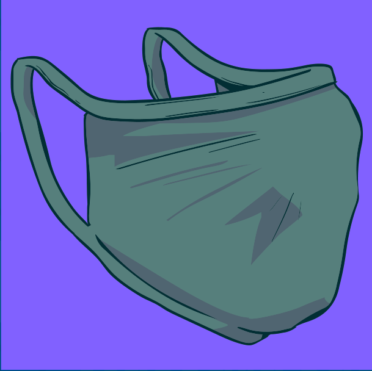

Máscara
As máscaras também são importante parte das medidas preventivas, juntamente com a higiene frequente de
mãos e o
distanciamento social.
Basicamente, existem três tipos de máscaras: as cirúrgicas, a N95/PFF2 e as máscaras de pano (caseiras).
Clique nas sanfonas
para conhecer as especificidades de cada uma delas.

Máscara cirúrgica
- Uso individual.
- Deve ser trocada a cada 2h ou sempre que úmida.
- Pessoas sintomáticas, equipe de saúde e profissionais de segurança.
- Obrigatória no manejo de pessoas com sintomas gripais.

N95/PFF2
- Uso exclusivo de profissionais de saúde.
- Utilizadas em determinados procedimentos que expelem aerossóis de secreções respiratórias
(intubação, aspiração etc.).

Máscara caseira
- Uso individual de pessoas assintomáticas.
- Deve ser usada sempre ao sair de casa.
- Deve conter duas camadas de tecido e cobrir totalmente a boca e o nariz, sem deixar espaços
nas
laterais.